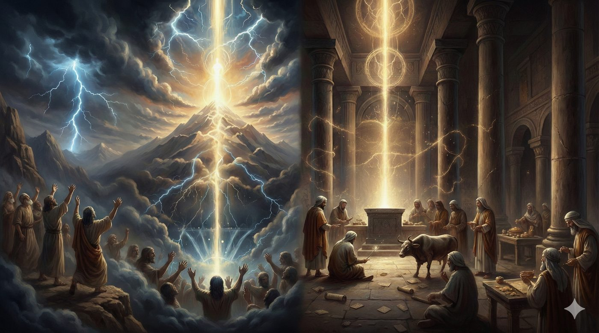
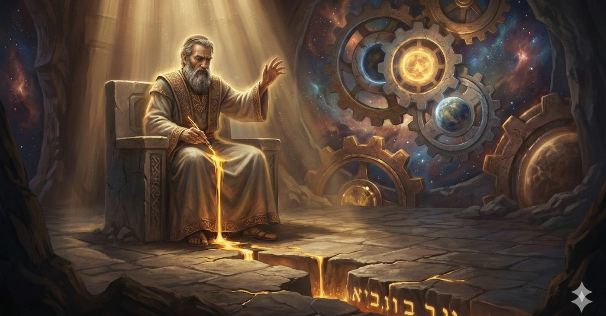
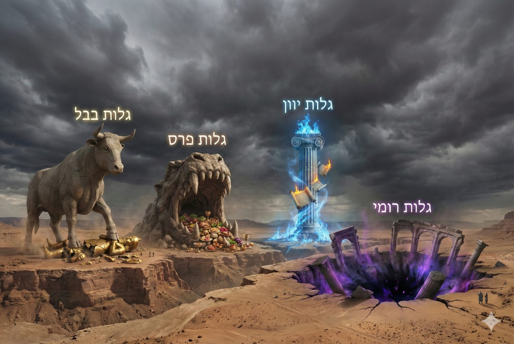
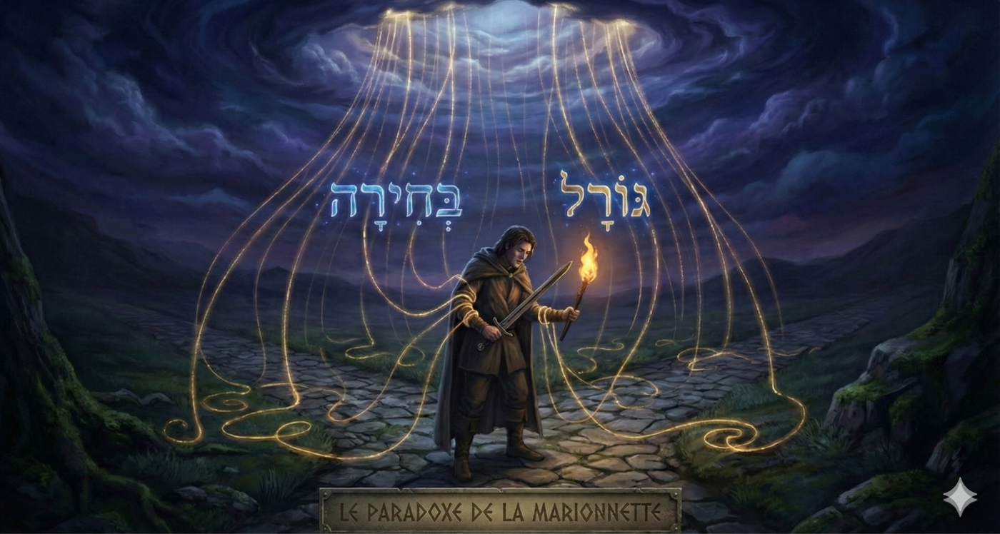

Mishpatim 5786
L’infinie justice du fini
La justice au Sinaï
L'étude de la Paracha Mishpatim nous confronte, dès ses premiers versets, à l'une des transitions les plus abruptes et les plus déconcertantes de la Torah.
Nous sortons à peine de la Paracha Yithro, sommet spirituel de l'histoire humaine : la Révélation au Mont Sinaï, Matan Torah. Au milieu du tonnerre, des éclairs, de la fumée et de la voix divine fendant la roche, le Ciel a embrassé la Terre. Le peuple d'Israël, dans une union mystique totale, a touché du doigt la transcendance pure. L'Infini s'est révélé à la finitude presque sans intermédiaire, les sept cieux se sont déchirés, et Israël a perçu, avec une clarté prophétique insoutenable, la réalité de l'Unité divine : « Je suis l'Éternel ton D.ieu ». C'est l'extase, la fusion des mondes, le dévoilement de la Lumière, dans toute sa gloire terrifiante.
Et soudain, sans transition, sans préambule poétique, sans phase de « décompression » spirituelle, le texte nous projette dans l'apparente froideur juridique des tribunaux.

La Paracha Mishpatim ne s'ouvre ni sur des lois concernant la construction du Temple, ni sur la liturgie de la prière, ni sur les secrets de la Création ou la méditation mystique des cieux, comme on aurait pu s'y attendre pour maintenir cette élévation. Au contraire, elle commence par une casuistique (partie de la théologie morale qui s'occupe des cas de conscience) qui paraît, à première vue, d'une trivialité déconcertante, voire choquante : « Et voici les statuts (Mishpatim) que tu placeras devant eux : Si tu achètes un esclave hébreu...» (Chemot 21).
Un esclave hébreu ? Après avoir entendu, quelques versets plus tôt, la déclaration retentissante « Je suis l'Éternel qui t'ai fait sortir d’Égypte, de la maison d'esclavage », la première parole législative concrète, la première application pratique de la Torah après le Décalogue, porte sur la gestion de l'esclavage humain (!)
La Paracha se déploie alors comme un vaste code législatif qui donne corps à la vision éthique du Sinaï transformant l'élan spirituel des Dix Commandements en une réalité sociale structurée, abordant avec une précision chirurgicale les interactions entre les hommes.
Ainsi sont notamment traités la justice sociale et le droit des personnes, au travers de l’esclave, de ses conditions de libération, de la protection de l’intégrité physique d’autrui (conséquences en cas de coups, blessures, meurtres volontaire ou involontaire) et de nombreuses autres lois civiles et pénales. La protection des biens et de responsabilité civile, au travers de la compensation financière due en cas de vol, de la légifération financière du bœuf qui encorne, de l’incendie qui se propage, du puits laissé volontairement ou involontairement, … Et l’éthique envers les vulnérables, les veuves et orphelins, l’étranger, ... Les devoirs envers le ciel sont également mis en exergue : le respect du chabbat, des fêtes, de la chemita (la jachère agricole), l'interdiction de consommer de la viande avec du lait…
Et enfin, comme pour refermer cette parenthèse abrupte, qui scandalise la lecture superficielle par un choc herméneutique, moral et théologique majeur, la Paracha se conclut par un retour au Sinaï. Les enfants d'Israël s'engagent par le cri de fidélité absolue : « Naassé vénichma », nous ferons et nous comprendrons. Moché, Aharon, Nadav et Avihou, accompagnés des anciens, contemplent une manifestation de la gloire divine avant que Moché ne s'enfonce seul dans la nuée pour un séjour de quarante jours sur le sommet du Mont Sinaï afin de recevoir les tables de la loi.
Cependant, c'est précisément dans cette chute apparente où l’on passe de la vision des voix célestes du Sinaï au code civil et pénal de la Torah, dans cette descente vertigineuse du sommet de la montagne embrasée vers la vallée des contrats humains et des servitudes sociales, que réside le secret le plus profond de la Torah et qui donne sens au Sinaï.
Ce chiour se propose d'explorer avec l’aide du Ciel et de nos maîtres, ce paradoxe fondamental. En nous appuyant sur les enseignements profonds délivrés dans le Zohar, les écrits de l'Ari (Isaac Louria), le Sfat Emet (Rabbi Yehudah Aryeh Leib Alter de Ger), le Pri Tsadik (Rabbi Tsadok HaKohen de Lublin), le Mei HaShiloach (Rabbi Mordechai Yosef Leiner d'Izbitz) et le Beit Yaakov (Rabbi Yaakov Leiner).
Nous tenterons d’expliquer comment ces penseurs appréhendent la sacralité des tribunaux, déconstruisent la banalité du "fait divers" juridique pour y révéler une "Providence Cachée" (Hashgacha) absolue, transformant le tribunal humain en une chambre d'écho d'une volonté divine immuable.
Les lieux de justice
Rachi, le prince des commentateurs, citant le midrash Mekhilta, s'arrête sur la conjonction de coordination « Et » (Vav ha-hibour) qui ouvre la Paracha : « Ve-élé haMishpatim » Et voici les lois. Ce connecteur grammatical, explique-t-il, sert de trait d'union entre la fin de la section précédente, les lois de l'Autel (Mizbea'h) qui clôturent Yithro, et le début du code des lois civiles et pénales. « Pourquoi cette Paracha est-elle juxtaposée aux lois de l’autel ? Pour te dire que tu placeras le Sanhédrin à côté du Temple ». Comme nous allons l’expliquer, il ne s'agit pas ici d'une simple directive d'urbanisme, mais d'une révolution géographique de l’emplacement des tribunaux qui révèle de l'intention du Législateur / Créateur.
Dans l’organisation “religieuse” de l'Antiquité, et souvent dans la pensée dualiste occidentale (la laïcité notamment), une frontière infranchissable sépare le Kodesh (le Sacré) du Hol (le Profane). Le Temple est le lieu de la théophanie, du silence, de l'encens, de la verticalité pure où l'homme s'annule devant le mystère divin. Le tribunal, à l'inverse, est l'arène de la contention, du conflit d'intérêts, de la ruse procédurale, de l'horizontalité bruyante des litiges humains. C'est le lieu où l'ego réclame son dû.
En ordonnant la contiguïté physique et spirituelle du siège de la Justice civile et du lieu du Sacrifice, la Torah abolit cette dichotomie. Elle proclame que le jugement d'un vol, la régulation d'une dette, ou l'évaluation d'un dommage corporel, ne sont pas des tâches administratives de "gestion de la cité", mais des actes liturgiques d'une intensité égale à l'holocauste offert sur l'autel.
Le Rabbi de Loubavitch, ainsi que les maîtres de Gur et d'Izbitz, y voient l'essence même du projet divin Dirah BeTah’tonim, établir une demeure pour l'Essence Divine dans les mondes les plus bas. Car la véritable Sagesse ne réside pas seulement dans l'ascension de l'homme vers D.ieu, mouvement initié à Yithro et accessible aux mystiques isolés, mais dans l'invitation faite à D.ieu de descendre dans la boue des marchés. Si la Présence Divine est capable de résider au sommet d'une montagne pure, c'est admirable mais attendu, mais lorsque La Sheh’ina imprègne les règles régissant l’esclave, un bœuf encorneur, un meurtrier, un feu dévorant, un puits ouvert, … alors Elle prouve son infinitude.
En effet, comme l'enseignent nos Maîtres au sujet des pouvoirs conférés aux hommes pour trancher les Halah’ot (cf Bava Metzia 59b sur le four d’Akhnaï, où les sages s’opposent à D.ieu lui-même sur la nature de l’impureté de ce four), la Torah n'est pas dans le Ciel “Lo Bashamayim Hi” (devarim,30,12). Le but de la Révélation n'est pas l'évasion vers le Ciel, la fuite dans une spiritualité désincarnée, mais l'atterrissage forcé et transformateur sur Terre. L'enjeu de Mishpatim est de démontrer que la Lumière de l'Infini du Sinaï, peut et doit habiter les structures les plus opaques, et les plus problématiques de la société humaine.
Car l'Infini ne fuit pas le fini, mais il l'habite. Le juge qui siège au tribunal ne traite pas de dossiers juridiques, il manipule, avec craintes et tremblements, la matière première de la Volonté Divine. Pour le dire de manière très abrupte, la Torah vient nous enseigner que Si D.ieu n'est pas dans le tribunal, il n'est nulle part.
Comme nous allons tout de suite l’analyser, en réalité, cette présence divine au sein du tribunal répond à une nécessité ontologique dictée par la structure même de la création.
La Justice comme réceptacle des lumières du Sinaï
Pour le comprendre, il faut se plonger dans la physique-métaphysique du Ari Zal (Rabbi Isaac Louria), qui structure la réalité autour de la dialectique des Orot (Lumières) et des Kelim (Réceptacles).
La Révélation du Sinaï fut un événement d'une intensité lumineuse insoutenable, un flux d'énergie divine brute (Or Ein Sof) menaçant de disloquer la réalité finie. Le texte midrashique nous rapporte que les âmes des enfants d'Israël s'envolaient à chaque parole divine, incapables de contenir la charge de sainteté. C'était un moment de Ratzo, la course éperdue de l'âme vers sa source, le désir d'annihilation dans l'Un, l'expiration cosmique. Mais une lumière sans réceptacle est vouée à la catastrophe : soit elle provoque la Shevirat HaKelim (la Brisure des réceptacles), brisant la psyché et la matière par son intensité, soit elle se retire dans une Histalkout stérile, laissant le monde dans une obscurité plus dense qu'auparavant.
Pour que la Révélation perdure et féconde l'histoire, le mouvement de Ratzo doit impérativement être suivi du Shov, le retour, l'inspiration, la stabilisation, l'intégration.
Mishpatim doit ainsi être perçu comme le Keli (le réceptacle) de Yithro. Les lois civiles et pénales, avec leur technicité aride, leurs détails sur les amendes, les servitudes et les dédommagements, constituent l'épais réceptacle, la "peau" nécessaire pour capter, refroidir et distribuer l'oxygène pur du Sinaï. À l'instar des "vêtements de peau" (Kotnot Or) dont D.ieu revêtit Adam pour lui permettre de survivre hors de l'Éden, Mishpatim est la "peau" de la Torah. Elle semble opaque et matérielle, mais sans cet épiderme juridique, l'âme de la Révélation resterait une abstraction insaisissable pour l'homme de chair et de sang.
Dès lors, commencer par l'esclave hébreu (Eved Ivri) n'est pas un hasard rédactionnel, mais une déclaration d'intention théologique. C'est le choix délibéré du point le plus bas de l'échelle sociale, la perte de liberté, la vente de soi pour vol ou misère, qui permet de démontrer la puissance de pénétration de la Torah. C'est le passage du Daat Elyon (la Connaissance Supérieure, unifiée, où tout est D.ieu et où le mal n'existe pas) au Daat Tah’ton (la Connaissance Inférieure, analytique, qui gère la multiplicité et le conflit). D.ieu intime à Israël : « Vous M'avez perçu dans l'unité du Feu céleste, maintenant, apprenez à Me percevoir dans la fragmentation de vos contrats de travail, dans la sueur de vos servitudes.»
Mais pour que cette perception soit accessible, il nous faut également renverser notre regard sur le monde et comprendre que la loi ne suit pas la réalité, mais qu'elle la précède.
Les contextes de la justice
Si le tribunal est un autel, quelle est la nature ontologique des objets qui y sont jugés ? Le bœuf, le feu, le puits, l'argent : sont-ils de simples éléments du décor terrestre ? Comment concilier ces contextes où la justice opère avec le Sinaï ?
La pensée rationnelle et séculière suppose une chronologie linéaire : le monde existe d'abord avec ses aléas, des incidents surviennent (un bœuf encorne, un feu se propage), et D.ieu, dans sa sagesse réactive, donne ensuite la Loi pour réguler ces incidents et rétablir l'ordre. Cette vision où la Loi est post-factum (consécutives des faits), n’est pas celle du Zohar et des maîtres hassidiques.
Pour pouvoir comprendre cette pensée, nous devons opérer un renversement de la causalité. Le Zohar (Teroumah 161b) nous enseigne : Istakel BeOraita U'Bra Alma - « Le Saint béni soit-Il a regardé dans la Torah et a créé le monde ».
Cet axiome n'est pas une métaphore mystique et poétique, mais un principe qui établit que la Torah est le plan architectural de la réalité, la matrice préexistante.
D.ieu n'a pas écrit la loi « Si un bœuf encorne... » (Chemot 21:28) parce qu'Il prévoyait, dans sa prescience, que des bœufs encorneraient. Au contraire : Il a créé des bœufs, leur a donné des cornes, et a instauré la physique du choc et de la biologie de la blessure parce que la Torah primordiale contenait, avant la création du monde, la combinaison spirituelle et légale de cette loi. Nous constatons dès lors que la loi précède la réalité et que le texte de la Torah précède le contexte humain.
Les sages hassidiques, le Sfat Emet et le Mei HaShiloach en particulier, exploitent totalement cette ontologie.
Le Sfat Emet développe, sur tout son livre d’explication de la Torah, que les mitsvot et les événements sont les visages d’une intériorité permanente de la Torah dans le monde, il insiste sur l’unité à trouver entre les lois, le Chabbat comme point interne du système, et la structure de la création.
Le Mei HaShiloach lit les parachiot comme des révélations de la volonté divine dans la contingence, avec cette idée forte que même la faute ou le conflit s’inscrivent dans un plan divin plus profond.
Ainsi, dans la logique mystique l’attribut de Gvoura est associé au feu, le Feu décrit dans notre paracha (Chemot 22,5) n’est plus seulement une réaction chimique mais l’extériorisation, dans la matière, de l’attribut de Rigueur. Sur cette base, on peut dire que le feu brûle parce qu’il est une “lettre” de la Torah, un signe concret de la rigueur divine. On y lit également le Bor, le puits, comme le lieu de vide et de chute, et on peut entendre dans ce puits non seulement un trou physique, mais l’image de l’absence ou l’insuffisance de Daat, de ce manque de conscience qui est la racine métaphysique de la chute.
Dès lors lorsqu’un juge tranche un cas de dommage, il ne règle pas un sinistre assurantiel, il manipule des énergies divines brutes. Il réaligne la matière déchue sur son plan spirituel originel. En payant pour un dommage, l'homme ne règle pas seulement une dette sociale, il effectue une opération de réparation cosmique, reconnaissant que même le chaos du litige est régi par une structure divine antérieure à la Création elle-même.

Le juge qui siège au tribunal procède à une forme de Korban, un rapprochement entre le désordre humain et la rectitude divine. Selon le Talmud (Chabbat 10a), le juge devient un "associé de D.ieu dans l'œuvre de la Création" : en restaurant l'équilibre par sa sentence, il répare la brèche du monde que le conflit avait ouverte. Ceci éclaire un trait frappant : dans les passages de Mishpatim, la Torah désigne les juges par le Nom divin de Elokim (par ex. Chemot 21,6 ; 22,8‑9).
La Justice des “accidents”
Dans l’école d’Izbitz-Lublin (Mei HaShiloach, Beit Yaakov), ces réflexions sur la préexistence de la Volonté atteint un point qui, du point de vue philosophique, frôle l’“acosmisme” (théorie où seule la Volonté Divine agit) : pour eux, et d’autres penseurs juifs, il n’est d’agent absolu que le Ratzon Hashem, la Volonté divine. Le “scénario” est dès lors écrit d’avance au niveau du divin, même si la halah’a maintient intégralement la responsabilité humaine.
Les réflexions qui découlent de cette analyse d’une structure divine préétablie les amènent à conclure que le hasard, les accidents, ces voiles qui semblent recouvrir nos vies, ne sont que des fictions, des vues de l’esprit qu'il convient de s’efforcer de dissiper, pour ne pas tomber dans l’hérésie et douter de la toute-puissance de l’Éternel.
Comme nous l’avions vu paracha Bechala’h, la stratégie d’Amalek est précisément de faire douter l’homme dans sa avoda hachem (son travail pour le divin) en introduisant la notion de hasard qui vient faire douter les bnei israel de l’intromission du divin dans les stades les plus bas et accidentels de la création.
Certains maîtres lisaient dèja cette tension au cœur de la défense de Hava qui, en prétendant avoir été séduite par le Serpent, utilise le verbe hychieani, et y entremêle le Yech de l’immanence et le Aïn de la transcendance, trahissant ainsi l'ambiguïté de notre perception1.
Dès lors, invoquer l’accident, la chance ou la malchance et la statistique reviendrait à ériger une idole intellectuelle, un rempart dérisoire contre la réalité du Divin et à se soumettre au venin que le Serpent originel continue de distiller dans les strates de la conscience humaine.
Ainsi pour ces maîtres, l’aléa n’est qu’une illusion, dans cet univers où chaque fragment de réel est saturé de sens, il n’existe aucun espace vide, aucune faille où le hasard pourrait trouver refuge, D.ieu ne joue pas aux dés comme l’a réaffirmé Einstein.
Si un bœuf en encorne un autre, ce n'est pas le fruit d'une rencontre fortuite, mais l'expression d'une Providence cachée qui exige une rectification nécessaire prévue avant la création du monde. Le transfert d’argent réparateur n’est alors que la face visible d’une redistribution d’énergies spirituelles voulue par la Providence.
C’est d’autant plus vrai, que certains de nos maîtres, le Alshikh hakadosh (Rabbi Moché Alshikh) et le Shlah Hakadoch (Rabbi Yeshaya Horowitz), interprètent les quatre avot nezikin, les quatre catégories principales de dommages (Avot Nezikin) définies par la Mishna : le Bœuf, le Puits, le Feu et le Maveh ( “dents”, si certains commentateurs y voient les dommages causés par les dents de l'animal, la majorité de la tradition l'identifie à l'être humain lui-même), non seulement comme des catégories juridiques, mais comme la structure des exils et des grands penchants fondamentaux de l’âme.

Le Bœuf (Shor) représente la force brute et le piétinement. Il correspond à l'exil de Babylone et au péché de l'Idolâtrie (le Veau d'Or, la statue de Nabuchodonosor). C'est la force de l'ego qui écrase autrui par arrogance.
La Dent (Maveh/Shen) représente le dommage par la consommation et le plaisir. Il correspond à l'exil de Perse/Médie (le festin d'Assuérus) et à la pulsion de la Luxure/Plaisir (Taava). C'est la destruction par l'hédonisme.
Le Feu (Esh) est une puissance qui éclaire mais qui consume si elle n'est pas maîtrisée, correspondant à l'exil de Grèce, symbole d'une sagesse externe et philosophique qui brûle la foi, et au trait de l'Orgueil intellectuel ou de la Colère.
Le Puits (Bor) représente la chute dans le vide, l'inertie, et la mort. Il correspond à l'exil d'Edom/Rome (l'exil actuel), un abîme long et profond sans fond visible, lié au Vide existentiel et à l'absence de sens.
Ainsi, le Beit Yaakov note avec une finesse extraordinaire que l'ordre talmudique traitant des dommages s'appelle Nezikin (Dommages), mais qu'il est spirituellement associé aux Yeshuot (Délivrances) ainsi que l’exprime Reish lakish dans le Talmud Chabbat 31a2 “Yeshouots-Saluts ; c'est l'ordre de Nezikin, Damages, car celui qui est poursuivi est sauvé des mains de son poursuivant.” Car la reconnaissance du dommage est le prélude indispensable à la réparation. D.ieu a créé un monde « fragile » et « cassable », un monde susceptible d'être encorné, brûlé ou souillé, précisément pour que l'histoire humaine puisse être le théâtre de la Yeshoua. Le dommage n'est plus une erreur du système, mais une fonctionnalité nécessaire pour permettre le Tikkoun, la réparation, grâce à la loi.
Pour autant, cette vision pose un problème éthique vertigineux, que nous devons aborder frontalement : Si tout est écrit, si le feu devait brûler le champ par décret divin (Ratzon), si un homme devait tuer son prochain par préméditation et ruse ? alors pourquoi punir l’humain ? N'est-il pas une simple marionnette de la Volonté divine ?

Pour tenter d’apporter une « réponse » à ce paradoxe entre la Volonté divine, le libre choix humain, et sa responsabilité halah’ique, il faut prendre le soin de distinguer deux niveaux de regard sur un même événement.
Au niveau du Mishpat, la perspective humaine et halah’ique, le monde est régi par une causalité linéaire et par le libre choix : l’homme choisit, il est donc pleinement responsable de ses actes, et le beit din le juge en conséquence.
Au niveau du Ratzon, la perspective divine, tout est déjà connu et voulu dans la profondeur du plan divin ; rien n’échappe à la Providence.
La conciliation se fait ainsi : le déterminisme n’est vrai que dans le regard rétrospectif de la foi. Après l’incendie, on peut dire : « en fin de compte, cela s’inscrivait dans la volonté, le Ratzon Hashem ». Mais au moment du choix, du point de vue de la halah’a, l’homme avait le devoir d’empêcher ce feu, et il porte la faute de s’être laissé utiliser comme canal de la Rigueur plutôt que de la Miséricorde.
Dès lors, le travail spirituel consiste à raffiner ses « vêtements », ses traits de caractère, ses réflexes intérieurs, pour ne pas devenir le vecteur de la destruction divine dans l’histoire. Le doute lui-même prend alors une fonction positive : non pas un scepticisme qui paralyse, mais un espace de vigilance où l’homme interroge ses futures décisions à la lumière de son Daat, c’est‑à‑dire de sa compréhension active de la Volonté divine.
Faire Justice
Au terme de cette analyse, la « chute » du Sinaï vers le tribunal civil apparaît non plus comme une dégradation, mais comme l'accomplissement ultime et nécessaire du dessein divin. Comme nous l'enseigne le Ari Zal, le monde matériel est parsemé d'étincelles de sainteté issues de la Brisure des réceptacles des mondes primordiaux. Ces étincelles ne se trouvent pas principalement dans les cieux ou dans les salles d'étude, mais sont prisonnières des « écorces » (Klipot) les plus denses : dans le bœuf qui encorne, dans l'argent volé, dans le champ dévasté, dans le litige commercial…
Ces étincelles attendent leur libération. La justice, menée selon les Mishpatim de la Torah, est l’un des principaux rituels qui libère ces lumières captives. Lorsque le juge prononce la sentence et que l'argent passe de la main du coupable à celle de la victime par la force de la Loi divine, ce n'est pas un simple transfert bancaire ou une régulation sociale : c'est une réparation cosmique (un Tikkoun). Dès lors le « Tribunal de l'Infini » ne siège pas dans l'au-delà, dans un tribunal céleste éthéré mais dans ce monde-ci. Lorsque l'homme refuse de voir dans son prochain un adversaire économique pour y discerner un partenaire (même antagoniste) dans le drame sacré de la Création, lorsque le juge fait justice de la manière la plus rigoureuse selon les lois divines et saintes des conflits les plus triviaux, le tribunal répond à sa définition, sanctifie le profane, introduit la lumière infini, dévoilé au Sinaï dans un réceptacle assez solide pour la contenir.
Ce retour de l'énergie divine à sa source, permet une unification du Nom de D.ieu, car en acceptant la justice, on refuse le hasard d’Amalek, on accepte de reconnecter la providence et les lois naturelles, de réparer la faute originelle, de reconnecter le Yech et le Ain, l’immanence et la transcendance, Elokim et Havaya, en associant les noms de D. qui étaient « perdus » en exil, Elokim le D. qui juge et Havaya celui qui agit de manière providentielle.
C’est ainsi que l’on peut expliquer la déclaration des Bnei Israël à la fin de la Paracha…
“Naassé vé Nichma”, nous agirons (nous créerons un réceptacle) et nous comprendrons (car tu y déverseras ta lumière).
Yehi Ratson, puisse être la Volonté du Ciel,
Que la justice s’applique selon Ta Volonté,
Que nous puissions réparer ce monde par la justice pour accéder à la Geoula
Chabat Chalom !
-------------------------------------------------------------------------
L’idée de la semaine
« Le Saint béni soit-Il a regardé dans la Torah et a créé le monde » : ainsi, les événements que nous percevons et vivons ne sont que la traduction d’un plan qui nous préexiste. Si cette vision annihile la possibilité d’un hasard, elle ne déresponsabilise pas pour autant l’homme, qui doit agir selon la Loi et se soumettre à la justice des tribunaux humains, ceux-ci devenant les canaux de la Volonté divine dans ce monde.
 Pour aller beaucoup plus loin
Pour aller beaucoup plus loin
La Paracha s'ouvre par le cas d'un voleur qui, incapable de restituer la valeur de son larcin, est vendu par le tribunal (Beit Din) : « S'il n'a pas de quoi payer, il sera vendu pour son vol » (Chemot 22:2). Pour le juriste, c'est une mesure de remboursement et de réinsertion sociale. Pour la mystique, c'est une description précise d'une catastrophe spirituelle et de sa réparation. Le Ari Zal, dans ses enseignements sur les Kavanot (intentions mystiques) des dommages, explique que le vol matériel (Geneiva) est la manifestation terrestre d'un vol spirituel bien plus grave.
L'univers subsiste grâce à un flux constant de lumière divine (Shefa) qui descend des mondes supérieurs (Atzilut) vers les mondes inférieurs (Briya, Yetsira, Assiya). Chaque créature, chaque brin d'herbe, chaque âme reçoit exactement la mesure de vitalité qui lui est allouée par la Justice Divine et qui correspond à la capacité de son "réceptacle".
Le voleur (Ganav) est celui qui tente de détourner ce flux. En s'appropriant le bien d'autrui, il ne déplace pas simplement de la matière d'un point A à un point B. Il cherche à attirer vers lui une lumière (Orot) qui ne lui est pas destinée, une lumière qui appartient au "réceptacle" de son prochain. Ce faisant, il crée un court-circuit dans les mondes spirituels. Il force les canaux de l'abondance à dévier de leur trajectoire divinement ordonnée.
En réparation, la Torah impose au voleur (celui qui vole en cachette à contrario du brigand) de payer le double (Kefel) de ce qu'il a volé (Chemot 22:3). S’il a volé 100, il en rendra 200 (le principal + le double). Pourquoi cette différence ? Le secret révélé par le Ari Zal touche à l'équilibre des flux masculin et féminin dans les mondes supérieurs.
L'univers est un dialogue matérialisé par la notion de mayin, “les eaux”. Il y a les Eaux Féminines (Mayin Noukvin), l'aspiration qui monte d'en bas (la prière, l'effort humain, le désir de connexion), et les Eaux Masculines (Mayin Doukhrin), la réponse qui descend d'en haut (la bénédiction, la pluie, la lumière).
Le voleur, en prenant indûment dans le secret, abîme le flux montant (il corrompt l'effort humain et la confiance) et, par voie de conséquence, bloque le flux descendant. Il cause un dommage "double" : en bas et en haut.
La Gematria (valeur numérique) confirme cette connexion mystique. Le mot Kefel (Double - כפל) a pour valeur numérique 130 (kaf 20+pé 80+lamed 30).
130 est aussi la Gematria de Sulam (l'Échelle de Jacob - סלם) et de Sinai (Sinaï - סיני).
En payant le double, le voleur ne fait pas “que” rembourser une somme. Il procède à la reconstruction de l'Échelle (Sulam) qui relie le Ciel et la Terre, échelle qu'il a brisée par son acte. Il doit restaurer le canal de communication entre les mondes. S'il possède les moyens financiers, il effectue cette réparation par l'argent (qui est son "sang" car appelé ainsi dans la Torah, cristallisé, de l'énergie vitale). Mais s'il est "insolvable", cela signifie que son âme n'a plus les ressources énergétiques pour réparer l'échelle par elle-même dans l'immédiat. Il doit alors être "vendu" en esclave pour réparer sa dette.
Le Ari Zal enseigne que tant que l'âme n'a pas réparé ses "Six Attributs" (Vav Ktzavot), pendant 6 années elle reste "incomplète", comme un bâtiment sans murs. Le travail de l'esclave est un travail de Birour (Clarification des étincelles). Il doit extraire les étincelles de sainteté tombées dans la matière (Klipot) à cause de son vol précédent. Chaque tâche que le maître lui impose est, en réalité, une opportunité providentielle de libérer une étincelle captive spécifique que seul lui pouvait libérer.
Il lie ce cycle individuel au cycle cosmique de l'histoire. De même que l'individu travaille six jours et se repose le septième, l’esclave travaille six ans et est libéré la septième année, la terre travaille six ans avant d'être en jachère la septième année, le monde existera sous sa forme actuelle de "réparation" pendant 6000 ans avant d'être libéré au septième millénaire
Les 6000 ans (Les Six Années de l'Esclave) correspondent à la période où l'humanité tout entière est considérée comme un "Esclave Hébreu". Nous sommes "vendus" à la matérialité à cause de la faute d'Adam (le premier "vol" du fruit de l’arbre de la connaissance du bien et du mal). Nous travaillons laborieusement à travers les millénaires (correspondant aux attributs : 1er millénaire/Hessed, 2ème/Gevoura, etc.) pour rectifier la création et trier le bien et le mal dans la matière.
Le 7ème millénaire (Le Chabbat Cosmique) correspond à la libération gratuite, l'ère Messianique où l'esclavage de la mort, du péché et du besoin cessera définitivement.
« Et la septième, il sortira libre gratuitement », sans avoir besoin de payer, car la grâce divine se dévoilera.
Amen !
Synthèse
Synthèse du Chiour : Mishpatim 5786 : La Justice au sommet de l'Infini
L’étude de cette paracha nous confronte à l'une des transitions les plus abruptes de la Torah : le passage de l'extase mystique du Sinaï à la froideur apparente du code civil et pénal. Après la Révélation de Yithro, où les sept cieux se sont déchirés pour dévoiler l'Unité divine, et libérer le peuple, le texte nous projette sans préambule dans la gestion des litiges humains, commençant paradoxalement par les lois de l'esclave hébreu. Cette chute apparente de la montagne embrasée vers la vallée des contrats sociaux constitue pourtant le secret le plus profond du projet divin : transformer l'élan spirituel des Dix Commandements en une réalité sociale structurée.
La topographie de la justice : Le Sanhédrin près de l'Autel
Rachi souligne que la conjonction « Et » (Vav ha-hibour) liant Mishpatim à la section précédente indique une révolution géographique : le Sanhédrin doit siéger à côté de l'Autel. En ordonnant la contiguïté physique du lieu du sacrifice et du siège de la justice civile, la Torah abolit la dichotomie entre le Sacré et le Profane. Elle proclame que le jugement d'un vol ou d'une dette n'est pas une simple tâche administrative, mais un acte liturgique d'une intensité égale à l'holocauste offert sur l'autel. L'enjeu est d'inviter D.ieu à descendre dans la boue des marchés, prouvant que Sa présence imprègne aussi bien les règles de l'esclavage que celles du Temple.
La Justice comme réceptacle : Le Keli du Sinaï
Pour la mystique de l'Ari Zal, la Révélation du Sinaï fut un flux de lumière brute (Or Ein Sof) trop intense pour être contenu par la psyché humaine. Mishpatim devient alors le réceptacle (Keli) nécessaire pour capter et distribuer cette énergie dans l'histoire. Les lois civiles, avec leur technicité aride, forment la "peau" de la Torah qui permet à l'âme de la Révélation de devenir saisissable pour l'homme de chair et de sang. En commençant par le point le plus bas de l'échelle sociale, l'esclave, D.ieu enseigne à Israël qu'Il doit être perçu non plus seulement dans le feu céleste, mais dans la fragmentation de chaque contrat humain.
L'Ontologie du droit : Quand la Loi précède le Réel
Contrairement à la pensée séculière qui voit la loi comme une réaction aux faits, le Zohar enseigne que D.ieu a regardé dans la Torah pour créer le monde. La Torah est ainsi le plan architectural préexistant : le feu ne brûle pas seulement par réaction chimique, mais parce qu'il est une "lettre" concrète de l'attribut de Rigueur divine. Lorsqu'un juge tranche un cas de dommage, il ne règle pas un simple sinistre, il manipule des énergies divines brutes pour réaligner la matière déchue sur son plan spirituel originel. Le hasard est alors dissipé : chaque conflit est une opportunité de réparation cosmique dirigée par une Providence cachée.
Conclusion : Le Tribunal de l'Infini
Le passage vers le tribunal civil est l'accomplissement ultime du dessein divin : établir une demeure ici-bas (Dirah BeTachtonim). La justice est le rituel par excellence qui libère les étincelles de sainteté captives du bœuf qui encorne ou de l'argent volé. En acceptant la rigueur des lois divines dans les litiges les plus triviaux, l'homme refuse le hasard et reconnecte l'immanence à la transcendance. C'est dans ce réceptacle d'action concrète que s'incarne le cri de fidélité finale : « Naassé vénichma », nous agirons pour créer le réceptacle, et nous comprendrons la lumière qui s'y déversera.
|
📚 Sources Tanakh (Torah, Prophètes, Hagiographes)
|
 Plan du Chiour
Plan du ChiourLe mot hychieani (השיאני) porte en en effet en lui une combinaison linguistique, car il contient les racines du Yech (l'existence substantielle, le « Je » affirmé, elokim) et du Aïn (le néant créateur, la source, havaya).↩︎
La Gemara continue de discuter de la conduite des sages, citant que Reish Lakish a dit : Quelle est la signification de ce qui est écrit : « Et la foi de votre temps sera une force de salut, de sagesse et de connaissance, la crainte du Seigneur est son trésor » (Isaïe 33:6) ? La foi ; c'est l'ordre de Zera'im, Graines, dans la Mishna, parce qu'une personne a foi en D.ieu et plante ses graines (Jérusalem Talmud). Vos temps ; c'est l'ordre de Moed, Festival, qui traite des différentes occasions et festivals qui se produisent tout au long de l'année. Force ; c'est l'ordre de Nashim, Femmes. Yeshouots-Saluts ; c'est l'ordre de Nezikin, Damages, car celui qui est poursuivi est sauvé des mains de son poursuivant. Sagesse ; c'est l'ordre de Kodashim, Objets Consacrés. Et la connaissance ; c'est l'ordre de Teharot, la Pureté, qui est particulièrement difficile à maîtriser. Et même si une personne étudie et maîtrise tout cela, « la crainte du Seigneur est son trésor », c'est prééminent.↩︎